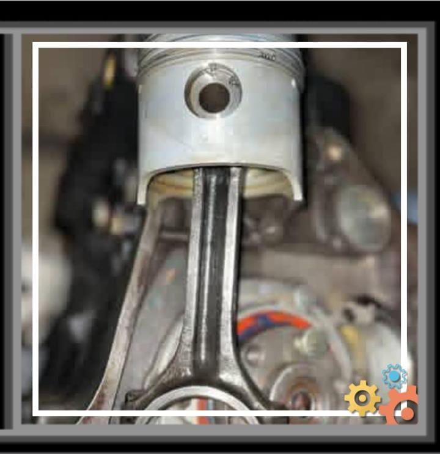

¿Que es el area de mecanica?
El area de mecanica es una de las ramas de la ingenieria que se encarga del estudio, diseño, análisis, fabricación y mantenimiento de sistemas mecánicos. Esta disciplina abarca una amplia gama de aplicaciones, desde la creación de maquinaria industrial hasta el desarrollo de vehículos y dispositivos tecnológicos.
Mecanica Automotriz
La mecanica automotriz es una especialización dentro del campo de la ingenieria mecanica que se enfoca en el estudio, diseño, mantenimiento y reparación de vehículos automotores. Esta disciplina abarca una amplia gama de conocimientos técnicos relacionados con los sistemas y componentes que conforman los automóviles, camiones, motocicletas y otros tipos de vehículos. Esta es una de las clases que se imparten en el Instituto Tecnico Alejandro Flores y sobre la cual se basa esta pagina web.

Objetivo de la Pagina
El objetivo de esta pagina es brindar informacion relevante y detallada sobre la carrera de Bachillerato Tecnico en Mecanica Automotriz (BTPMA) que se imparte en el Instituto Tecnico Alejandro Flores. A traves de esta plataforma, los estudiantes y visitantes podran acceder a informacion sobre la carrera, el plan de estudios, el perfil de egreso, los requisitos de ingreso, las oportunidades laborales y los contactos para obtener mas informacion.